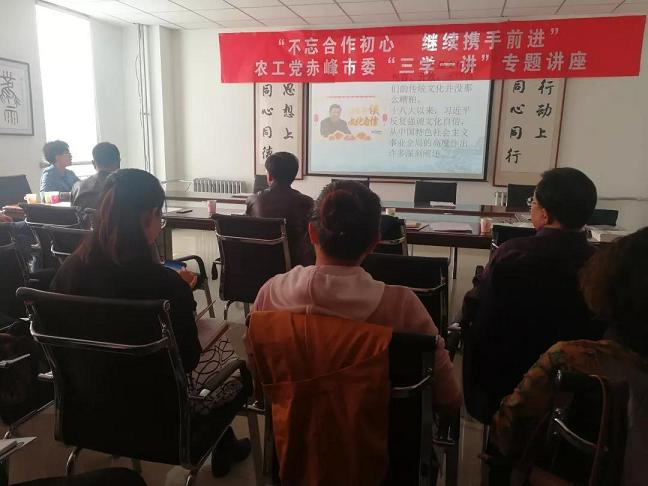
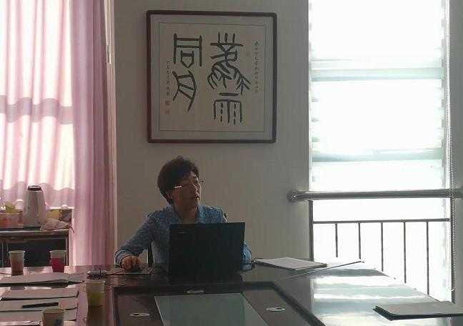

2018年10月21日，农工党赤峰市委举办“不忘合作初心 继续携手前进”主题教育“三学一讲”专题活动。农工党赤峰市委委员、各支部负责人及骨干党员30余人参加活动。

农工党赤峰市委主委、赤峰市政府副市长李艳茹从文化在人类经济社会发展中的作用、中国传统文化的特点以及为什么会有这样的特点、赤峰的历史文化三个方面作了题为《认知传统知识，增强文化自信》的专题讲座。

李艳茹指出：没有高度的文化自信,没有文化的繁荣兴盛,就没有中华民族伟大复兴。中华民族有着深厚文化传统，形成了富有特色的思想体系，体现了中华民族几千年来积累的知识智慧和理性思辨，这是我国的独特优势。中共十八大以来，习近平总书记反复强调文化自信，从中国特色社会主义事业全局的高度作出许多深刻阐述，要“实现“两个一百年”奋斗目标、实现中华民族伟大复兴的中国梦，需要充分运用中华民族数千年来积累下的伟大智慧。
李艳茹要求，赤峰市广大农工党员要以“三学一讲”专题活动为重要载体，深入学习中共十九大精神，强化“四个意识”、坚定“四个自信”，牢牢把握正确的政治方向，不断提升自身素质，认真履行参政党职能，为实现赤峰市跨越崛起做出贡献。